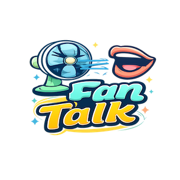

Talk into the mic like you’re talking through a fan. Record → Play or Download.
🎙 Record
⏹ Stop
▶ Play
⬇ Download
Preset
Slow Fan — Nostalgic
Medium Fan — Classic
Fast Fan — Buzz
Fan Intensity (more = stronger fan effect)
Ready.